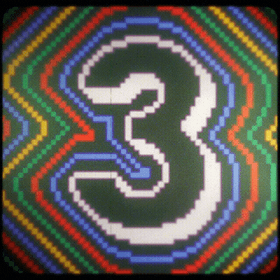

@~~~~~~~~~Response 1~~~~~~~~~@
Erin Rusek
2/8/20
Core Studio
Metaphors We Live By: Response
The way different cultures tie their specific values into metaphors
is something that really fascinates me. Not just because it provides deeper insight to that
culture, but also because metaphors “break the fourth wall” in an almost comical way. When
referring to cultures, orientational metaphors among the other types are an incredibly rudimentary
yet expressive figures of speech (for example: up=happy, down=sad, forward=future, etc.) If I was
to relate this orientation metaphorical thinking to the web, I would say it functions in quite
a similar way.
At a first glance, computers seem to function on a completely
different plane than human thinking.Programs run on binary and wires with seemingly automatic
decision-making. If most people were to place computers and humans on a scale, they’d be pretty far
apart from one another. I believe though, that the computer like many other man-made tech, is
not as distant as we may think. Because the web was thought up, constructed and is consistently
used by human beings, the computer must function in a way that we can understand. When it
doesn’t, we are confused and Raymond Loewy’s MAYA principle comes into effect.
Thus, the need to section HTML code with separate divs, and the
linking of a CSS document with its HTML counterpart are comprehensible to humans as the
metaphorical “division,” and the “link” which connects us to the rest of the web (as well as to
each other in communal terminology). In a broader sense of the web, the metaphorical play between
the meaning of the word compute in both a technological and mental context displays the subtle
connection between us and the computer. Even scroll functions (up to down, mimicking our reading
patterns) move along with our physical orientation (perhaps why it’s sometimes unnatural to
scroll sideways on a website).
Questions:
- In terms of website design, I wonder how many failures there have been in website
launches because the interface didn’t fall in line with the human sense of orientational
metaphor. What if a website were coded to suit the orientational metaphor of a tree or a
bug (I wonder if we’d get a new perspective on our own world)?
- Because the web could be seen as an extension of ourselves, what does this mean for the
future of “online culture”? Will we see conflict being brought into the web just as it takes
place in this world? Will certain webs inherit cultural taboos or punishments differing
from other ones? Will we see the rise of factions creating a sort of “lawless land”?
@~~~~~~~~~Response 2~~~~~~~~~@
Erin Rusek
2/8/20
Core Studio
Metalogue: Response
Although comparing a dance to the body and blood of Christ may seem a little out there in terms of
computers and the web, I think there’s many important messages to take from Bateson’s Metalogue. I was
confused at first as to how I might go about assigning a metaphor to the computer/the web, when I
realized that we are living this comparison right now. As the web becomes an extension of our minds,
we are continuing to blur the line between the digital world and reality.
To begin, Bateson attempts to establish the meaning of the phrase “sort of” to his daughter in
context with the idea that a doll was “sort of” like a human. “Sort of,” in this sense emits an
uncanny sentiment and, because of this uncomfort, naturally draws the comparison apart. Thinking in
terms of the web, this uncanny rift such as a browser tracking someone’s movement or an
algorithm predicting what someone might want to search next, brings an air of discomfort. It
creates the notion that the computer is “sort of” human, something we generally find eerie. Not
only can this make us uncomfortable, but it can also cause issues. Technology predicting thought
can become too reliable making people dependent, or perhaps in a rather dystopian fashion, replace
human interaction altogether.
To keep the web, computers, algorithms and humanity separate is something I feel has been debated
for a while. Those with fears for the future of A.I. I believe to a certain extent see the
metaphor of the human aligned the computer potentially dangerous. What I think the Metalogue
finished on was the note that blurring these lines, or creating the metaphor in the first place,
might not be such a good idea (having the potential to alter reality). Instead, to keep the
objects, ideas or things being compared separate would allow us to grip reality with assurance,
avoiding potential chaos and confusion.
Questions:
- Since we’ve pretty much entered a time in which humanity, computers, and the web
co-exist, will there need to be extra measures taken to keep the real world and the digital
world apart? To a certain extent, the lines have already been blurred, so what does this
mean for the future relationship between humanity and computers/the web?
- Referring to the web as “sort of” human sounds potentially dangerous, so why does it
seem that design keeps pushing towards a more human-like web? Is the idea that if the
web acts more like us, it will make it easier to navigate? Is this true, or misguided?
Home